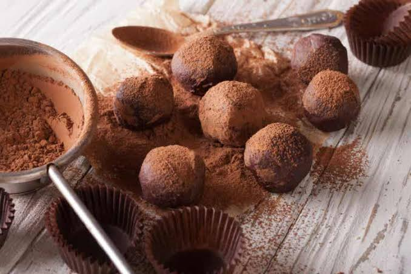

<!DOCTYPE html>
<html lang="en">
<head>
    <meta charset="UTF-8">
    <meta name="viewport" content="width=device-width, initial-scale=1.0">
    <link rel="stylesheet" href="../../../css/elementoUnitario.css">
    <title>Trufas de chocolate/title>
</head>
<body>

    <header>
        <label class="Titulo">Antojopedia</label>
        <nav>
            <ul>
                <li><a href="../../../index.html">Inicio</a></li>
                <li><a href="../../categorias.html">Categorías</a></li>
            </ul>
        </nav>
    </header>

    <main>
      
        <article class="descripcion">
            <h2>Trufas de chocolate</h2>
            
            <section class="descripcionPrincipal">
                
                <p>Las trufas de chocolate son uno de los dulces más elegantes y sencillos de la repostería. Se elaboran a partir de una mezcla de chocolate y crema, que posteriormente se enfría y se moldea para obtener pequeñas porciones.

Además, pueden decorarse con cacao en polvo, coco rallado, frutos secos o virutas de chocolate.</p>
            </section>
        </article>

         <article class="ingredientes">
            <h3>Información</h3>
            <ul>
                <li><strong>Tiempo de preparación</strong> 20 minutos.</li>
                <li><strong>Tiempo de refrigeración</strong> 2 horas.</li>
                <li><strong>Porciones</strong> 20 unidades.</li>
                <li><strong>Dificultad</strong> Fácil</li>
            </ul>
        </article>

        <article class="ingredientes">
            <h3>Ingredientes</h3>
           <ul>
            <li>250 g de chocolate negro.</li>
            <li>120 ml de crema de leche.</li>
            <li>30 g de mantequilla.</li>
            <li>1 cucharadita de esencia de vainilla.</li>
            <li>Cacao en polvo.</li>
            <li>Coco rallado.</li>
           </ul>
        </article>

        <article class="instrucciones">
            <h3>Instrucciones de Preparación</h3>
            <ol>
                <li>Trocea el chocolate y colócalo en un recipiente resistente al calor.</li>
                <li>Calienta la crema de leche a fuego lento sin dejar que hierva.</li>
                <li>Vierte la crema sobre el chocolate y mezcla hasta obtener una preparación homogénea.</li>
                <li>Añade la mantequilla y la esencia de vainilla.</li>
                <li>Lleva la mezcla al refrigerador durante dos horas.</li>
                <li>Forma pequeñas bolas con ayuda de una cuchara.</li>
                <li>Cubre las trufas con cacao en polvo, coco rallado o chocolate rallado.</li>
                <li>Guárdalas en el refrigerador hasta el momento de servirlas.</li>
        </article>
        <article class="ingredientes">
            <h3>Consejos</h3>
            <ol>
                <li>Utiliza chocolate con un alto porcentaje de cacao.</li>
                <li>Evita calentar demasiado la mezcla.</li>
                <li>Puedes incorporar frutos secos troceados.</li>
                <li>Mantén las trufas refrigeradas.</li>
            </ol>
        </article>

        <article class="ingredientes">
            <h3>Concervacion</h3>
            Las trufas pueden conservarse entre cinco y siete días dentro del refrigerador.
        </article>

        <article class="ingredientes">
            <h3>informacion nutricional(por unidad)</h3>
            <ol>
                <li><strong>Calorias</strong> 75 kcal. </li>
                <li><strong>proteinas</strong> 1 g.</li>
                <li><strong>Grasas</strong> 5 g.</li>
                <li><strong>Carbohidratos</strong> 5 g.</li>
                <li><strong>Fibra</strong> 1 g.</li>
            </ol>
        </article>
    </main>

    <footer>
        <p>&copy; 2026 Antojopedia - Todos los derechos reservados.</p>
    </footer>

</body>
</html> 